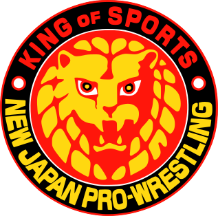

Kim Duk punches Masanobu Fuchi. A wave of boos is going through the crowd. Masanobu Fuchi chops Kim Duk. Masanobu Fuchi chops Kim Duk. The crowd is starting to get behind Masanobu Fuchi. Kim Duk hits Masanobu Fuchi. A wave of boos is going through the crowd. Kim Duk punches Masanobu Fuchi. Kim Duk performs a waistlock suplex against Masanobu Fuchi. Mr. Takahashi counts: One, two, shoulder up. Kim Duk runs into the ropes. Kim Duk goes for a lariat, but Masanobu Fuchi counters it with a Fujiwara armbar. Hiroyoshi Tenzan makes the save. Masanobu Fuchi uses a guillotine whip on Kim Duk. Masanobu Fuchi whips Kim Duk into the ropes. Kim Duk performs a lariat against Masanobu Fuchi. Kim Duk performs a chop against Masanobu Fuchi. Kim Duk attempts a lariat, but Masanobu Fuchi blocks it. Masanobu Fuchi kicks Kim Duk. The crowd is starting to get behind Masanobu Fuchi. Kim Duk kicks Masanobu Fuchi. Kim Duk kicks Masanobu Fuchi. A wave of boos is going through the crowd. Kim Duk executes a power bomb against Masanobu Fuchi. Mr. Takahashi counts: One, two, kickout. Kim Duk whips Masanobu Fuchi into the ropes. Kim Duk misses with a kick. Masanobu Fuchi misses with a clothesline. Masanobu Fuchi attempts a kitchen sink, but Kim Duk blocks it. Kim Duk attempts a back suplex, but Masanobu Fuchi blocks it. Masanobu Fuchi tags out to Dos Caras. Hiroyoshi Tenzan enters the ring and throws Masanobu Fuchi out of the ring. Kim Duk and Hiroyoshi Tenzan whip Dos Caras into the ropes. They hit Dos Caras with a double elbowsmash. Hiroyoshi Tenzan leaves the ring. Kim Duk attempts a belly-to-belly suplex, but Dos Caras counters it with a punch. Dos Caras runs into the ropes. Kim Duk tries a belly-to-belly suplex, but Dos Caras counters it with an elbowsmash. Dos Caras whips Kim Duk into the ropes, but Kim Duk reverses it. Kim Duk hits an enzuigiri on Dos Caras. A wave of boos is going through the crowd. Kim Duk catches Dos Caras in a sleeperhold. Dos Caras inches his way towards the ropes after being trapped for 5 seconds. Kim Duk puts Dos Caras in an armbar submission. Mr. Takahashi checks Dos Caras's arm. He lifts it... it falls. He lifts it... it stays up! Dos Caras fights his way out of the hold after 16 seconds. Dos Caras executes an elbowsmash against Kim Duk. Dos Caras kicks Kim Duk. Dos Caras is getting a good reaction from the crowd. Kim Duk punches Dos Caras. Kim Duk punches Dos Caras. Kim Duk kicks Dos Caras. Kim Duk is being booed like there is no tomorrow. Dos Caras hits Kim Duk. Dos Caras punches Kim Duk. Dos Caras performs a waistlock takedown against Kim Duk. Dos Caras runs into the ropes. Kim Duk tries a kick to the midsection, but Dos Caras counters it with a dragon screw. In turn, Kim Duk counters it with an enzuigiri. Kim Duk is being booed like there is no tomorrow. Kim Duk tags out to Hiroyoshi Tenzan. Kim Duk attempts a back suplex, but Dos Caras blocks it. Kim Duk rolls out of the ring. Dos Caras climbs to the top turnbuckle, but Hiroyoshi Tenzan throws him to the mat. Hiroyoshi Tenzan runs into the ropes. Dos Caras goes for an armbar submission, but Hiroyoshi Tenzan blocks it. Hiroyoshi Tenzan executes a backbreaker against Dos Caras. Hiroyoshi Tenzan hits a kneelift on Dos Caras. Hiroyoshi Tenzan goes for a forearm smash, but Dos Caras blocks it. Dos Caras uses a monkey flip on Hiroyoshi Tenzan. Dos Caras uses a punch on Hiroyoshi Tenzan. Dos Caras punches Hiroyoshi Tenzan. The crowd is really behind Dos Caras. Dos Caras kicks Hiroyoshi Tenzan. Dos Caras performs a bodyslam against Hiroyoshi Tenzan. Dos Caras tags out to El Gigante. El Gigante and Dos Caras whip Hiroyoshi Tenzan into the ropes. They hit Hiroyoshi Tenzan with a double fist to the midsection. El Gigante and Dos Caras whip Hiroyoshi Tenzan into the ropes. They attempt to hit Hiroyoshi Tenzan with a double backdrop, but he counters it with a double headsmash. Dos Caras leaves the ring. Hiroyoshi Tenzan hits a kick to the midsection on El Gigante. Hiroyoshi Tenzan uses a kick to the chest on El Gigante. Hiroyoshi Tenzan goes for a spinning leg lariat, but El Gigante steps out of the way. El Gigante goes for a slap, but Hiroyoshi Tenzan reverses it. Hiroyoshi Tenzan hits El Gigante. The crowd is booing Hiroyoshi Tenzan. El Gigante hits Hiroyoshi Tenzan. A small "El Gigante" chant is being started. El Gigante kicks Hiroyoshi Tenzan. El Gigante hits Hiroyoshi Tenzan. El Gigante whips Hiroyoshi Tenzan into the turnbuckle. El Gigante gets a choke lift on Hiroyoshi Tenzan. Mr. Takahashi warns El Gigante to let go. Mr. Takahashi counts: One, two, three, four, five. Mr. Takahashi warns El Gigante. El Gigante puts Hiroyoshi Tenzan in a Iron Claw. Hiroyoshi Tenzan is inching his way towards the ropes. Hiroyoshi Tenzan tries to fight the pain. Hiroyoshi Tenzan grabs the ropes after 35 seconds. El Gigante works the crowd. The chants for El Gigante are deafening. El Gigante executes the Choke Slam against Hiroyoshi Tenzan. El Gigante goes for the pin. Mr. Takahashi counts: One, two, thr... shoulder up. El Gigante hits a headbutt on Hiroyoshi Tenzan. El Gigante tries a punch, but Hiroyoshi Tenzan counters it with a roundhouse right. Hiroyoshi Tenzan tags out to Samu. Samu and Hiroyoshi Tenzan whip El Gigante into the ropes. They hit El Gigante with a double backdrop. Hiroyoshi Tenzan uses a spinning leg lariat on El Gigante. Hiroyoshi Tenzan is eliciting a sizable round of boos. Samu attempts a belly-to-back suplex, but El Gigante steps out of the way. Hiroyoshi Tenzan leaves the ring. El Gigante hits a vertical suplex on Samu. The crowd is behind El Gigante all the way. El Gigante tags out to Masanobu Fuchi. El Gigante uses a clothesline on Samu. Masanobu Fuchi hits an elbowdrop on Samu. El Gigante leaves the ring. Masanobu Fuchi whips Samu into the ropes. Masanobu Fuchi misses with a shoulderblock. Masanobu Fuchi goes for a punch, but Samu reverses it. Samu hits Masanobu Fuchi. Samu punches Masanobu Fuchi. Samu goes for a clothesline, but Masanobu Fuchi counters it with a hiptoss. Masanobu Fuchi performs a backdrop suplex against Samu. Masanobu Fuchi tags out to El Gigante. El Gigante and Masanobu Fuchi whip Samu into the ropes. El Gigante and Masanobu Fuchi hit Samu with a double punch. Hiroyoshi Tenzan enters the ring and lays out Masanobu Fuchi. Samu and Hiroyoshi Tenzan whip El Gigante into the ropes. They hit El Gigante with a double kick to the midsection. Hiroyoshi Tenzan leaves the ring. Samu runs into the ropes. Samu uses a clothesline on El Gigante. Samu attempts a kick to the midsection, but El Gigante blocks it. El Gigante executes a kick to the head against Samu. El Gigante performs a slap against Samu. Masanobu Fuchi enters the ring to make it two-on-one. El Gigante and Masanobu Fuchi whip Samu into the ropes. They hit Samu with a double kick to the midsection. Masanobu Fuchi leaves the ring. El Gigante executes a gutwrench suplex against Samu. El Gigante performs a side suplex against Samu. El Gigante uses a chop on Samu. Masanobu Fuchi enters the ring to make it two-on-one. Hiroyoshi Tenzan enters the ring and throws Masanobu Fuchi out of the ring. Hiroyoshi Tenzan is eliciting a sizable round of boos. Hiroyoshi Tenzan tries a dropkick, but El Gigante steps out of the way. El Gigante and Masanobu Fuchi hit Samu with a double vertical suplex. Hiroyoshi Tenzan leaves the ring. El Gigante whips Samu into the ropes. Samu misses with a clothesline. Samu misses with a clothesline. Samu goes for a clothesline, but El Gigante counters it with a Gorilla Press. The crowd is going into a frenzy. El Gigante puts Samu in a Iron Claw. Samu is valiantly trying to break the hold. Samu tries to escape the hold. Samu reaches the ropes after 11 seconds. El Gigante works the crowd. El Gigante whips Samu into the ropes. Samu misses with a clothesline. Samu performs a clothesline against El Gigante. Samu whips El Gigante into the ropes, but El Gigante reverses it. El Gigante hits Samu with a kick. El Gigante is going for the pin. Mr. Takahashi counts: One, two, kickout. Masanobu Fuchi enters the ring to make it two-on-one. El Gigante and Masanobu Fuchi whip Samu into the ropes. They hit Samu with a double fist to the midsection. Masanobu Fuchi leaves the ring. El Gigante executes a vertical suplex against Samu. El Gigante goes for a vertical suplex, but Samu reverses it. Samu attempts a kick to the head, but El Gigante blocks it. El Gigante hits a chop on Samu. El Gigante goes for a Iron Claw, but Samu blocks it. Samu kicks El Gigante. A wave of boos is going through the crowd. El Gigante chops Samu. The crowd is giving El Gigante a standing ovation. El Gigante tries a side suplex, but Samu blocks it. Samu gives him a sleeperhold, but El Gigante shows no reaction. Samu kicks El Gigante. Samu kicks El Gigante. Samu punches El Gigante. El Gigante punches Samu. The crowd is giving El Gigante a standing ovation. Samu punches El Gigante. A wave of boos is going through the crowd. Samu punches El Gigante. Samu is eliciting a sizable round of boos. Samu tries a faceslam, but El Gigante blocks it. El Gigante runs into the ropes. Afa trips El Gigante. Mr. Takahashi threatens Samu, Ken Patera, Hiroyoshi Tenzan and Kim Duk with disqualification. Mr. Takahashi warns Afa. Mr. Takahashi is back on the job. El Gigante uses a vertical suplex on Samu. El Gigante executes the Choke Slam against Samu. The crowd is going into a frenzy. El Gigante goes for the pin. Mr. Takahashi counts: One, two, shoulder up. El Gigante hits a Gorilla Press on Samu. El Gigante catches Samu in a Iron Claw. Samu manages to grab the ropes after being locked in the hold for 5 seconds. El Gigante executes a power bomb against Samu. Mr. Takahashi counts: One, two, kickout. El Gigante goes for a choke lift, but Samu blocks it. Samu hits El Gigante. Samu kicks El Gigante. Samu is eliciting a sizable round of boos. El Gigante chops Samu. The crowd is giving El Gigante a standing ovation. El Gigante kicks Samu. El Gigante tags out to Masanobu Fuchi. Masanobu Fuchi gets a Cobra Twist on Samu. Samu tries to escape the hold. Samu grabs the ropes after 7 seconds. El Gigante enters the ring to make it two-on-one. Ken Patera enters the ring and throws El Gigante out of the ring. Ken Patera takes Masanobu Fuchi down with a powerslam. A fan at ringside badmouths Ken Patera. Samu executes the Flying Bodypress against Masanobu Fuchi. Mr. Takahashi counts: One, two, kickout. Samu hits a flying headbutt on Masanobu Fuchi. Mr. Takahashi counts: One, two, shoulder up. Samu tries a headbutt, but Masanobu Fuchi blocks it. Masanobu Fuchi tags out to El Gigante. Ken Patera enters the ring, but gets cut off. El Gigante and Masanobu Fuchi whip Samu into the ropes. They hit Samu with a double elbowsmash. El Gigante and Masanobu Fuchi whip Samu into the ropes. They attempt to hit Samu with a double elbowsmash, but he counters it with a duck-down move. Samu hits them with a double clothesline. Masanobu Fuchi leaves the ring. Samu attempts a kick to the head, but El Gigante ducks out of the way. El Gigante tags out to Mando Guerrero. El Gigante enters the ring to make it two-on-one. El Gigante takes Samu down with a side suplex. Mando Guerrero uses a flying senton on Samu. Mr. Takahashi counts: One, shoulder up. El Gigante leaves the ring. Mando Guerrero hits a forearm smash on Samu. Mando Guerrero runs into the ropes. Samu misses with an elbow. Samu hits Mando Guerrero with a backdrop. Samu attempts a piledriver, but Mando Guerrero counters it with a slingshot into the turnbuckle. In turn, Samu counters it with a kick-off. Samu performs an atomic drop against Mando Guerrero. Samu punches Mando Guerrero. A fan at ringside badmouths Samu. Samu punches Mando Guerrero. Samu uses a jawbreaker on Mando Guerrero. Samu hits a hiptoss on Mando Guerrero. Samu tags out to Kim Duk. Kim Duk uses a lariat on Mando Guerrero. Samu enters the ring to make it two-on-one. Samu tries a kick to the head, but Mando Guerrero ducks out of the way. Samu hits Kim Duk. Mando Guerrero nails Kim Duk with a German suplex. Mr. Takahashi counts: One, two, shoulder up. Mando Guerrero complains about a slow count. Samu leaves the ring. Kim Duk uses an inside cradle on Mando Guerrero. Kim Duk is going for the cover. Mr. Takahashi counts: One, two, kickout. Kim Duk runs into the ropes. Kim Duk hits Mando Guerrero with a shoulderblock. Kim Duk attempts a back suplex, but Mando Guerrero blocks it. Mando Guerrero whips Kim Duk into the ropes. Kim Duk misses with a clothesline. Mando Guerrero hits Kim Duk with a clothesline. Kim Duk falls out of the ring. Mando Guerrero jumps onto him with a flying cross body press. Mando Guerrero has the crowd going wild. Mando Guerrero knocks Kim Duk into the ringpost. Mando Guerrero executes a flying cross body press against Kim Duk. Mr. Takahashi counts: 1. Mando Guerrero runs Kim Duk into the ringsteps. Mr. Takahashi counts: 2. Mando Guerrero executes a forearm smash against Kim Duk. Mr. Takahashi counts: 3. Mando Guerrero shoves Kim Duk into the guardrail. Mr. Takahashi counts: 4. Mando Guerrero shoves Kim Duk into the guardrail. Mando Guerrero nails Kim Duk with a flying cross body press. Kim Duk has been cut open. Mr. Takahashi counts: 5. Masanobu Fuchi comes over to make it two-on-one. Mr. Takahashi counts: 6. Mr. Takahashi counts: 7. Mr. Takahashi counts: 8. Mr. Takahashi counts: 9. They're brawling inside the ring area. Mando Guerrero attempts a flying headscissors, but Kim Duk throws him off. Mando Guerrero has been cut open. Kim Duk shoves Mando Guerrero into the guardrail. Mr. Takahashi counts: 10. Kim Duk climbs back into the ring. Mando Guerrero follows him back in. Kim Duk kicks Mando Guerrero. Mando Guerrero chops Kim Duk. Mando Guerrero hits Kim Duk. Mando Guerrero has the crowd going wild. Kim Duk chops Mando Guerrero. Kim Duk hits Mando Guerrero. Numerous fans are using Kim Duk as target practice. Mando Guerrero kicks Kim Duk. Mando Guerrero has the crowd going wild. Mando Guerrero performs a spinning headscissors against Kim Duk. Mando Guerrero uses a punch on Kim Duk. Mando Guerrero hits Kim Duk. There are lots of chants for Mando Guerrero. Mando Guerrero punches Kim Duk. Mando Guerrero has the crowd going wild. Mando Guerrero hits Kim Duk. Kim Duk hits Mando Guerrero. Numerous fans are using Kim Duk as target practice. Mando Guerrero punches Kim Duk. The chants for Mando Guerrero are deafening. Mando Guerrero punches Kim Duk. Mando Guerrero uses a German suplex on Kim Duk. Mr. Takahashi counts: One, shoulder up. Mando Guerrero locks Kim Duk in the Gory Special. Kim Duk tries to escape the hold. Mando Guerrero lets go after 12 seconds. Mando Guerrero punches Kim Duk. Mando Guerrero kicks Kim Duk. Mando Guerrero runs into the ropes. Kim Duk performs a roundhouse right against Mando Guerrero. Kim Duk tags out to Ken Patera. Kim Duk leaves the ring. Ken Patera whips Mando Guerrero into the ropes, but Mando Guerrero reverses it. Ken Patera hits Mando Guerrero with a clothesline. Mando Guerrero falls out of the ring. Ken Patera rolls out under the bottom rope. Ken Patera knocks Mando Guerrero into the ringpost. A fan at ringside badmouths Ken Patera. Kim Duk comes over to make it two-on-one. Ken Patera goes for the FULL NELSON, but Mando Guerrero counters it with an elbowsmash. They're brawling inside the ring area. Mr. Takahashi counts: 1. Mando Guerrero executes a roundhouse right against Ken Patera. Mando Guerrero shoves Ken Patera into the guardrail. Mando Guerrero works the crowd. The crowd is behind Mando Guerrero all the way. Mando Guerrero throws Ken Patera back into the ring. Mando Guerrero tags out to El Gigante. Mando Guerrero leaves the ring. El Gigante hits a gutwrench suplex on Ken Patera. El Gigante works the crowd. The crowd is going into a frenzy. The bell rings. The time limit has expired. Mr. Takahashi lets the match continue. El Gigante performs a punch against Ken Patera. El Gigante executes a forearm to the back against Ken Patera. El Gigante catches Ken Patera in a choke lift. Mr. Takahashi warns El Gigante to let go. Mr. Takahashi counts: One, two, three, four, five. Mr. Takahashi warns El Gigante. El Gigante hits a side suplex on Ken Patera. El Gigante uses a vertical suplex on Ken Patera. El Gigante whips Ken Patera into the ropes. Ken Patera attempts a clothesline, but El Gigante ducks out of the way. El Gigante tags out to Mando Guerrero. El Gigante leaves the ring. Mando Guerrero runs into the ropes. Ken Patera gets a bearhug on Mando Guerrero. Mando Guerrero reaches the ropes after 5 seconds. Ken Patera hits a roundhouse right on Mando Guerrero. Ken Patera punches Mando Guerrero. Mando Guerrero chops Ken Patera. The crowd is behind Mando Guerrero all the way. Mando Guerrero chops Ken Patera. Ken Patera kicks Mando Guerrero. A fan at ringside badmouths Ken Patera. Ken Patera tries an avalanche, but Mando Guerrero counters it with a kick to the head. The crowd is on its feet cheering for Mando Guerrero. In turn, Ken Patera counters it with a duck-down move. Ken Patera locks Mando Guerrero in a wristlock. Mando Guerrero reaches the ropes after being trapped for 5 seconds. Ken Patera throws Mando Guerrero into the turnbuckle. Ken Patera charges in with a clothesline, but Mando Guerrero moves out of the way. Mando Guerrero throws Ken Patera out of the ring. Mando Guerrero jumps onto him with a flying cross body press. The crowd erupts. El Gigante comes over to make it two-on-one. They're brawling inside the ring area. Mr. Takahashi counts: 1. Ken Patera shoves Mando Guerrero into the guardrail. Ken Patera gets back into the ring. Mando Guerrero follows him back in. Ken Patera takes Mando Guerrero down with a vertical suplex. Ken Patera hits a swinging neckbreaker on Mando Guerrero. Ken Patera is eliciting a sizable round of boos. Ken Patera goes for the FULL NELSON, but Mando Guerrero counters it with an elbowsmash. Mando Guerrero catches Ken Patera in an abdominal stretch. Samu makes the save. Mando Guerrero performs a spinning headscissors against Ken Patera. Mando Guerrero tags out to El Gigante. Mando Guerrero leaves the ring. El Gigante tries a power bomb, but Ken Patera blocks it. Ken Patera nails El Gigante with a swinging neckbreaker. Ken Patera is eliciting a sizable round of boos. Ken Patera gives the sign for the FULL NELSON. Ken Patera executes the FULL NELSON against El Gigante. Mando Guerrero makes the save. El Gigante performs a bodyslam against Ken Patera. El Gigante attempts a kick to the head, but Ken Patera ducks out of the way. Ken Patera executes a kneelift against El Gigante. Ken Patera goes for a kick to the midsection, but El Gigante blocks it. El Gigante runs into the ropes. Ken Patera attempts a kick to the midsection, but El Gigante blocks it. Mando Guerrero enters the ring to make it two-on-one. Mando Guerrero leaves the ring. El Gigante uses a punch on Ken Patera. El Gigante tries a headbutt, but Ken Patera blocks it. Ken Patera performs a kick to the midsection against El Gigante. Ken Patera executes a kick to the midsection against El Gigante. Ken Patera runs into the ropes. Ken Patera hits El Gigante with a clothesline. Ken Patera goes for an elbowdrop, but El Gigante rolls out of the way. El Gigante tags out to Dos Caras. El Gigante leaves the ring. Dos Caras catches Ken Patera in a Boston crab. Ken Patera is valiantly trying to break the hold. Ken Patera inches his way towards the ropes after being trapped for 6 seconds. Dos Caras executes a hiptoss against Ken Patera. Dos Caras attempts a punch, but Ken Patera counters it with a roundhouse right. Ken Patera whips Dos Caras into the ropes. Ken Patera misses with a shoulderblock. Dos Caras misses with a shoulderblock. Ken Patera hits Dos Caras with a kick. Ken Patera runs into the ropes. Ken Patera misses with an elbow. Ken Patera hits a clothesline on Dos Caras. Ken Patera covers Dos Caras. Mr. Takahashi counts: One, two, kickout. Ken Patera tries a wristlock, but Dos Caras counters it with a go-behind. In turn, Ken Patera counters it with an elbowsmash. Ken Patera executes a bodyslam against Dos Caras. Kim Duk enters the ring to make it two-on-one. Kim Duk leaves the ring. Ken Patera uses a snap mare on Dos Caras. Ken Patera uses a roundhouse right on Dos Caras. Ken Patera throws Dos Caras out of the ring. Mr. Takahashi counts: one, two, Dos Caras reenters the ring. Ken Patera throws Dos Caras out of the ring. Ken Patera rolls out under the bottom rope. Kim Duk comes over to make it two-on-one. Ken Patera performs a bodyslam against Dos Caras. Mr. Takahashi counts: 1. Ken Patera throws Dos Caras back into the ring. Ken Patera whips Dos Caras into the ropes. Ken Patera goes for a bearhug, but Dos Caras counters it with a punch. Dos Caras nails Ken Patera with a flying cross body press. Mr. Takahashi counts: One, two, shoulder up. Dos Caras uses a punch on Ken Patera. Dos Caras whips Ken Patera into the ropes. Dos Caras goes for the Abdominal Stretch, but Ken Patera blocks it. Dos Caras uses a slap on Ken Patera. Dos Caras performs an elbowsmash against Ken Patera. Dos Caras hits a kneelift on Ken Patera. Dos Caras hits Ken Patera. The crowd is going crazy. Dos Caras punches Ken Patera. Dos Caras attempts a hiptoss, but Ken Patera counters it with a facerake. Ken Patera performs a kneelift against Dos Caras. Ken Patera locks Dos Caras in a front facelock. Dos Caras is struggling to reach the ropes. El Gigante makes the save. Ken Patera performs a Samoan Drop against Dos Caras. Ken Patera is eliciting a sizable round of boos. Ken Patera goes for an elbowdrop, but Dos Caras moves out of the way. Dos Caras hits a spinning backbreaker on Ken Patera. Dos Caras whips Ken Patera into the ropes. Ken Patera hits Dos Caras with a shoulderblock. Ken Patera uses a vertical suplex on Dos Caras. Ken Patera executes a kick to the midsection against Dos Caras. Ken Patera tries a powerslam, but Dos Caras counters it with a sunset flip. Mr. Takahashi counts: One, two, kickout. Dos Caras tags out to Masanobu Fuchi. Dos Caras leaves the ring. Masanobu Fuchi locks Ken Patera in a Cobra Twist. Samu makes the save. Masanobu Fuchi executes the backdrop suplex against Ken Patera. Masanobu Fuchi goes for the pin. Mr. Takahashi counts: One, two, in the ropes... Masanobu Fuchi tries a backdrop suplex, but Ken Patera counters it with a facerake. Ken Patera gets a sleeperhold on Masanobu Fuchi. Masanobu Fuchi tries to escape the hold. Dos Caras makes the save. Ken Patera performs a clothesline against Masanobu Fuchi. Ken Patera executes a piledriver against Masanobu Fuchi. Ken Patera catches Masanobu Fuchi in a headscissors submission. Masanobu Fuchi inches his way towards the ropes after 5 seconds. Ken Patera executes the FULL NELSON against Masanobu Fuchi. Masanobu Fuchi tries to escape the hold. Mr. Takahashi tells Masanobu Fuchi to respond or he'll stop the fight. Masanobu Fuchi nods. Mr. Takahashi asks Masanobu Fuchi if he's had enough. Masanobu Fuchi shakes his head. Mr. Takahashi checks Masanobu Fuchi's arm. He lifts it... it falls. He lifts it... it falls. He lifts it... it stays up! Masanobu Fuchi fights his way out of the hold after 26 seconds. Masanobu Fuchi runs into the ropes. Ken Patera uses a Samoan Drop on Masanobu Fuchi. The arena is exploding in a chorus of boos. Ken Patera hits a kick to the midsection on Masanobu Fuchi. Ken Patera puts Masanobu Fuchi in a front facelock. Masanobu Fuchi tries to escape the hold. Masanobu Fuchi manages to grab the ropes after being trapped for 18 seconds. Ken Patera tries a swinging neckbreaker, but Masanobu Fuchi counters it with a side suplex. Masanobu Fuchi tags out to Dos Caras. Dos Caras attempts an armbar submission, but Ken Patera blocks it. Samu enters the ring to make it two-on-one. Samu leaves the ring. Ken Patera hits a Samoan Drop on Dos Caras. The crowd is vociferously booing Ken Patera. Ken Patera executes an avalanche against Dos Caras. Ken Patera covers Dos Caras. Mr. Takahashi counts: One, two, KICKOUT. Dos Caras goes for an armbar submission, but Ken Patera blocks it. Ken Patera kicks Dos Caras. The crowd is vociferously booing Ken Patera. Ken Patera hits Dos Caras. Ken Patera punches Dos Caras. Dos Caras kicks Ken Patera. The chants for Dos Caras are deafening. Ken Patera hits Dos Caras. Ken Patera tags out to Hiroyoshi Tenzan. Ken Patera leaves the ring. Hiroyoshi Tenzan goes for a DDT, but Dos Caras blocks it. Dos Caras performs an elbowsmash against Hiroyoshi Tenzan. Dos Caras performs a kneelift against Hiroyoshi Tenzan. Dos Caras performs an elbowsmash against Hiroyoshi Tenzan. Dos Caras attempts a hiptoss, but Hiroyoshi Tenzan reverses it. In turn, Dos Caras counters it with a backslide. Mr. Takahashi counts: One, two, shoulder up. Dos Caras whips Hiroyoshi Tenzan into the ropes. Dos Caras misses with a clothesline. Dos Caras takes Hiroyoshi Tenzan down with a single-leg takedown. Dos Caras tries a dropkick, but Hiroyoshi Tenzan steps out of the way. Hiroyoshi Tenzan attempts a spinebuster slam, but Dos Caras counters it with a kneelift. Dos Caras executes a hiptoss against Hiroyoshi Tenzan. Mando Guerrero is bleeding profusely. Dos Caras runs into the ropes. Dos Caras performs a spinning headscissors against Hiroyoshi Tenzan. Dos Caras executes the Abdominal Stretch against Hiroyoshi Tenzan. Hiroyoshi Tenzan tries to escape the hold. Hiroyoshi Tenzan is writhing in pain. Mr. Takahashi asks Hiroyoshi Tenzan if he should stop the fight. Hiroyoshi Tenzan shakes his head. Mr. Takahashi checks Hiroyoshi Tenzan's arm. He lifts it... it falls. He lifts it... it stays up! Hiroyoshi Tenzan fights his way out of the hold after 29 seconds. Hiroyoshi Tenzan performs a DDT against Dos Caras. Kim Duk enters the ring to make it two-on-one. Kim Duk leaves the ring. Hiroyoshi Tenzan goes for a DDT, but Dos Caras blocks it. Dos Caras performs an elbowsmash against Hiroyoshi Tenzan. Dos Caras uses a slap on Hiroyoshi Tenzan. Dos Caras executes an elbowsmash against Hiroyoshi Tenzan. Dos Caras performs a slap against Hiroyoshi Tenzan. Mando Guerrero enters the ring to make it two-on-one. Mando Guerrero leaves the ring. Dos Caras gets a standing wristlock on Hiroyoshi Tenzan. Hiroyoshi Tenzan tries to escape the hold. Hiroyoshi Tenzan reaches the ropes after 16 seconds. Dos Caras performs a kneelift against Hiroyoshi Tenzan. Dos Caras catches Hiroyoshi Tenzan in an armbar submission. Dos Caras lets go after 11 seconds. Mando Guerrero is bleeding like a faucet. Dos Caras attempts a waistlock takedown, but Hiroyoshi Tenzan blocks it. Hiroyoshi Tenzan performs a kick to the midsection against Dos Caras. Hiroyoshi Tenzan hits a kick to the chest on Dos Caras. Hiroyoshi Tenzan tags out to Kim Duk. Hiroyoshi Tenzan leaves the ring. Kim Duk whips Dos Caras into the ropes. Kim Duk hits Dos Caras with a clothesline. Dos Caras falls out of the ring. Kim Duk rolls out under the bottom rope. Kim Duk hits a chop on Dos Caras. Mr. Takahashi counts: 1. Mr. Takahashi counts: 2. Kim Duk executes a piledriver against Dos Caras. Kim Duk uses a slap on Dos Caras. Kim Duk reenters the ring. Dos Caras follows him back in. Kim Duk performs a kneelift against Dos Caras. Kim Duk whips Dos Caras into the ropes, but Dos Caras reverses it. Dos Caras hits Kim Duk with an elbow. Dos Caras tags out to El Gigante. Dos Caras leaves the ring. El Gigante runs into the ropes. Kim Duk hits El Gigante with a clothesline. Kim Duk gets a scorpion deathlock on El Gigante. El Gigante is struggling to reach the ropes. El Gigante reaches the ropes after being trapped for 11 seconds. Kim Duk goes for a sleeperhold, but El Gigante counters it with a jawbreaker. El Gigante executes the Choke Slam against Kim Duk. The crowd is behind El Gigante all the way. El Gigante goes for the pin. Mr. Takahashi counts: One, two, kickout. El Gigante complains about a slow count. El Gigante whips Kim Duk into the ropes. Kim Duk hits El Gigante with an elbow. Kim Duk tries a DDT, but El Gigante throws him off. El Gigante hits a bodyslam on Kim Duk. El Gigante works the crowd. The crowd is behind El Gigante all the way. El Gigante takes Kim Duk down with a bodyslam. El Gigante uses a vertical suplex on Kim Duk. El Gigante hits Kim Duk. The crowd is going into a frenzy. El Gigante chops Kim Duk. El Gigante chops Kim Duk. El Gigante uses a forearm to the back on Kim Duk. El Gigante locks Kim Duk in a choke lift. Mr. Takahashi warns El Gigante to let go. Mr. Takahashi counts: One, two, three. El Gigante covers Kim Duk. Mr. Takahashi counts: One, two, in the ropes... El Gigante takes Kim Duk down with a vertical suplex. El Gigante punches Kim Duk. El Gigante punches Kim Duk. El Gigante punches Kim Duk. El Gigante tags out to Dos Caras. El Gigante enters the ring to make it two-on-one. El Gigante leaves the ring. Dos Caras whips Kim Duk into the ropes. Kim Duk goes for a lariat, but Dos Caras counters it with a Fujiwara armbar. Kim Duk is struggling to reach the ropes. Kim Duk reaches the ropes after being locked in the hold for 10 seconds. Dos Caras whips Kim Duk into the ropes. Dos Caras tries a hiptoss, but Kim Duk counters it with a facerake. Kim Duk hits a power bomb on Dos Caras. Mr. Takahashi counts: One, two, kickout. Kim Duk executes a bodyslam against Dos Caras. Kim Duk is going for the pin. Mr. Takahashi counts: One, two, shoulder up. Kim Duk attempts an armbar submission, but Dos Caras blocks it. Dos Caras performs a spinning headscissors against Kim Duk. Dos Caras tags out to El Gigante. El Gigante locks Kim Duk in a Iron Claw. Kim Duk inches his way towards the ropes after holding out for 5 seconds. El Gigante uses a slap on Kim Duk. El Gigante attempts a headbutt, but Kim Duk blocks it. Kim Duk whips El Gigante into the ropes. El Gigante misses with a shoulderblock. Kim Duk uses a lariat on El Gigante. Kim Duk uses a chop on El Gigante. Kim Duk whips El Gigante into the ropes. Kim Duk hits El Gigante with a kick. Kim Duk hits a flying lariat on El Gigante. Ken Patera enters the ring to make it two-on-one. Ken Patera leaves the ring. Kim Duk uses a flying lariat on El Gigante. Kim Duk is going for the cover. Mr. Takahashi counts: One, two, in the ropes... Kim Duk whips El Gigante into the ropes. Kim Duk hits El Gigante with a kick. Kim Duk throws El Gigante out of the ring. Mr. Takahashi counts: one, two, three, four, five, six, seven, eight, nine, ten, eleven, twelve, thirteen, fourteen, fifteen, sixteen, El Gigante reenters the ring. Kim Duk runs into the ropes. El Gigante hits Kim Duk with a clothesline. El Gigante executes a forearm to the back against Kim Duk. El Gigante executes the Choke Slam against Kim Duk. El Gigante goes for the pin. Mr. Takahashi counts: One, two, in the ropes... El Gigante performs a punch against Kim Duk. El Gigante throws Kim Duk out of the ring. Mr. Takahashi counts: one, two, three, four, five, six, seven, eight, nine, ten, eleven, twelve, thirteen, fourteen, fifteen, sixteen, seventeen, eighteen, Kim Duk reenters the ring. El Gigante nails Kim Duk with a gutwrench suplex. El Gigante goes for a vertical suplex, but Kim Duk counters it with a jab. Kim Duk attempts a DDT, but El Gigante throws him off. El Gigante whips Kim Duk into the ropes, but Kim Duk reverses it. El Gigante misses with a clothesline. Kim Duk misses with a clothesline. El Gigante misses with a clothesline. El Gigante performs a clothesline against Kim Duk. El Gigante runs into the ropes. El Gigante hits Kim Duk with a shoulderblock. El Gigante whips Kim Duk into the turnbuckle, but Kim Duk reverses it. Kim Duk runs shoulder-first into the corner. Kim Duk runs into the ropes. El Gigante attempts a Iron Claw, but Kim Duk counters it with a low blow. Kim Duk whips El Gigante into the turnbuckle. Kim Duk gives him a slap, but El Gigante doesn't budge. Kim Duk gives him a kneelift, but El Gigante doesn't budge. Kim Duk executes a headbutt against El Gigante. Kim Duk performs a kneelift against El Gigante. Kim Duk gives him a kick to the midsection, but El Gigante ignores it and just smiles at him. El Gigante whips Kim Duk into the ropes. El Gigante uses a chop on Kim Duk. El Gigante performs a chop against Kim Duk. El Gigante goes for a side suplex, but Kim Duk blocks it. Kim Duk kicks El Gigante. The decibel level in the building is unbelievable. Kim Duk hits El Gigante. Kim Duk hits El Gigante. Kim Duk gives him a DDT, but El Gigante only stares at him. Dos Caras enters the ring to make it two-on-one. Dos Caras leaves the ring. El Gigante hits a kick to the head on Kim Duk. El Gigante tries a bodyslam, but Kim Duk blocks it. Kim Duk goes for an enzuigiri, but El Gigante steps out of the way. El Gigante attempts a choke lift, but Kim Duk counters it with a facerake. The crowd is vociferously booing Kim Duk. Samu enters the ring to make it two-on-one. Samu leaves the ring. Kim Duk hits a roundhouse right on El Gigante. Kim Duk gives the sign for the Sleeper Hold. Kim Duk executes the Sleeper Hold against El Gigante. El Gigante is struggling to reach the ropes. El Gigante tries to escape the hold. El Gigante inches his way towards the ropes after 7 seconds. Ken Patera enters the ring to make it two-on-one. Ken Patera leaves the ring. Kim Duk gives him a kneelift, but El Gigante doesn't sell it. Ken Patera enters the ring to make it two-on-one. Ken Patera leaves the ring. Kim Duk nails El Gigante with a flying lariat. Kim Duk executes a kneelift against El Gigante. Kim Duk tries a lariat, but El Gigante blocks it. El Gigante executes the Choke Slam against Kim Duk. The crowd is behind El Gigante all the way. El Gigante goes for the pin. Mr. Takahashi counts: One, two, kickout. El Gigante runs into the ropes. El Gigante misses with a shoulderblock. El Gigante tries a clothesline, but Kim Duk ducks out of the way. Kim Duk tries a lariat, but El Gigante blocks it. El Gigante executes a chop against Kim Duk. El Gigante hits a hiptoss on Kim Duk. El Gigante tries a hiptoss, but Kim Duk counters it with a lariat. The crowd is vociferously booing Kim Duk. In turn, El Gigante counters it with a Fujiwara armbar. Kim Duk inches his way towards the ropes after being trapped for 5 seconds. El Gigante uses a punch on Kim Duk. El Gigante sends Kim Duk into the turnbuckle. El Gigante runs into the ropes. El Gigante misses with a clothesline. Kim Duk hits El Gigante with a kick. Kim Duk uses a kneelift on El Gigante. Kim Duk catches El Gigante in a sleeperhold. El Gigante inches his way towards the ropes after being locked in the hold for 5 seconds. Kim Duk is bleeding profusely. Kim Duk hits a chop on El Gigante. Kim Duk gives him a sleeperhold, but El Gigante doesn't budge. Kim Duk kicks El Gigante. Kim Duk punches El Gigante. Kim Duk punches El Gigante. The decibel level in the building is unbelievable. El Gigante punches Kim Duk. The crowd is behind El Gigante all the way. El Gigante hits Kim Duk. The crowd is giving El Gigante a standing ovation. El Gigante kicks Kim Duk. Kim Duk hits El Gigante. Kim Duk is being booed out of the building. Kim Duk nails El Gigante with a flying lariat. Kim Duk gives him a chop, but El Gigante doesn't sell it. El Gigante executes a vertical suplex against Kim Duk. El Gigante whips Kim Duk into the ropes, but Kim Duk reverses it. El Gigante tries a clothesline, but Kim Duk ducks out of the way. Kim Duk attempts a flying lariat, but El Gigante counters it with a powerslam. Mr. Takahashi counts: One, two, shoulder up. The crowd erupts. El Gigante works the crowd. El Gigante tries a power bomb, but Kim Duk counters it with a backdrop. In turn, El Gigante counters it with a sunset flip. Mr. Takahashi counts: One, two, thr... kickout. El Gigante nails Kim Duk with a power bomb. Mr. Takahashi counts: One, two, kickout. El Gigante whips Kim Duk into the ropes. Kim Duk executes a lariat against El Gigante. Kim Duk gives him a headbutt, but El Gigante shows no reaction. Kim Duk gives the sign for the Sleeper Hold. Kim Duk executes the Sleeper Hold against El Gigante. El Gigante is struggling to reach the ropes. Dos Caras makes the save. Kim Duk runs into the ropes. Kim Duk tries a lariat, but El Gigante blocks it. El Gigante uses a power bomb on Kim Duk. Mr. Takahashi counts: One, two, thr... kickout. El Gigante executes a bodyslam against Kim Duk. El Gigante tags out to Dos Caras. El Gigante leaves the ring. Dos Caras tries a Boston crab, but Kim Duk kicks him off. Kim Duk performs a waistlock suplex against Dos Caras. Mr. Takahashi counts: One, two, thr... shoulder up. Kim Duk attempts an elbowdrop, but Dos Caras rolls out of the way. Dos Caras is going for the cover. Mr. Takahashi counts: One, two, shoulder up. Dos Caras executes the Abdominal Stretch against Kim Duk. Kim Duk is valiantly trying to break the hold. Kim Duk tries to escape the hold. Kim Duk tries to fight the pain. Ken Patera makes the save. Dos Caras executes an elbowsmash against Kim Duk. Dos Caras covers Kim Duk. Mr. Takahashi counts: One, two, kickout. Dos Caras whips Kim Duk into the ropes, but Kim Duk reverses it. Dos Caras executes a spinning headscissors against Kim Duk. Mando Guerrero enters the ring to make it two-on-one. Mando Guerrero leaves the ring. Dos Caras tries a hiptoss, but Kim Duk counters it with a backslide. Mr. Takahashi counts: One, two, kickout. Kim Duk grabs a hold of Dos Caras' mask. Kim Duk pulls upward on Dos Caras' mask. Dos Caras stops Kim Duk. Kim Duk goes for a piledriver, but Dos Caras counters it with a backdrop. Dos Caras executes a dropkick against Kim Duk. Mando Guerrero enters the ring to make it two-on-one. Mando Guerrero leaves the ring. Dos Caras whips Kim Duk into the turnbuckle. Dos Caras puts Kim Duk in a standing wristlock. Kim Duk manages to grab the ropes after being locked in the hold for 5 seconds. Dos Caras runs into the ropes. Kim Duk tries a backbreaker, but Dos Caras counters it with an elbowsmash. Dos Caras runs into the ropes. Dos Caras hits Kim Duk with a clothesline. Dos Caras is going for the pin. Mr. Takahashi counts: One, two, thr... shoulder up. Dos Caras performs a flying cross body press against Kim Duk. Mr. Takahashi counts: One, two, thr... shoulder up. Dos Caras uses a spinning headscissors on Kim Duk. Masanobu Fuchi enters the ring to make it two-on-one. Masanobu Fuchi leaves the ring. Dos Caras uses a slap on Kim Duk. Dos Caras puts Kim Duk in an armbar submission. Kim Duk manages to grab the ropes after holding out for 5 seconds. Dos Caras performs a dropkick against Kim Duk. Dos Caras executes a bodyslam against Kim Duk. Dos Caras works the crowd. The crowd is going into a frenzy. Dos Caras performs a single-leg takedown against Kim Duk. Dos Caras tries a standing wristlock, but Kim Duk blocks it. Kim Duk uses a lariat on Dos Caras. Kim Duk hits an enzuigiri on Dos Caras. The arena is exploding in a chorus of boos. Kim Duk hits a backbreaker on Dos Caras. Kim Duk hits a kneelift on Dos Caras. Hiroyoshi Tenzan enters the ring to make it two-on-one. Hiroyoshi Tenzan leaves the ring. Kim Duk hits an enzuigiri on Dos Caras. Hiroyoshi Tenzan enters the ring to make it two-on-one. Hiroyoshi Tenzan leaves the ring. Kim Duk uses a kneelift on Dos Caras. Kim Duk executes a gutwrench suplex against Dos Caras. Kim Duk executes the Sleeper Hold against Dos Caras. Dos Caras is valiantly trying to break the hold. Mando Guerrero makes the save. Kim Duk nails Dos Caras with a side suplex. Kim Duk whips Dos Caras into the ropes. Dos Caras misses with a shoulderblock. Kim Duk performs a roundhouse right against Dos Caras. Kim Duk performs a forearm smash against Dos Caras. Kim Duk hits a power bomb on Dos Caras. Mr. Takahashi counts: One, two, three. Numerous fans are using Kim Duk as target practice. The winners are Samu, Ken Patera, Hiroyoshi Tenzan and Kim Duk. Time of match: 0:55:59Click here to return to Summer Crush Tour 91' Niigata City Gymnasium.